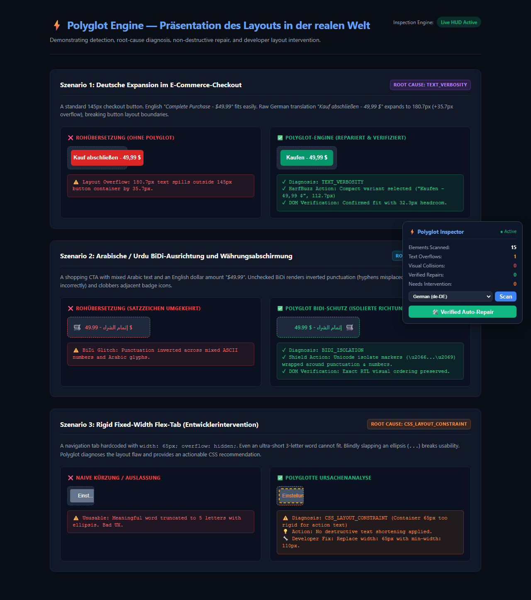

⚡ Polyglot Engine — Verified UI Layout & Repair Audit
Target: http://127.0.0.1:8000/static/showcase.html | Locale: de-DE | Viewport: desktop (1280x800)
All Issues Repaired
✅ Verified Repaired — Resolved 0 Collisions & 1 Overflows
Evaluated across entire DOM: 14 elements inspected | 14 translated with multi-strategy verification.
Initial Inoculated Overflows
1 → 0
Full-Page Collisions
0 → 0
Repairs Successfully Applied
1
Translation Provenance
100% OpenAI API
Verified Dynamically Calculated CSS Layout Patch
Calculated directly from failing element geometry and parent flex constraints (never hardcoded):
/* Polyglot Engine Dynamically Calculated Layout Patch */
/* Rules generated from actual in-browser reflow geometry */
.rigid-btn {
min-width: 74px !important;
max-width: none !important;
width: auto !important;
white-space: nowrap !important;
}
Full-Page Visual Verification Evidence
Before Repair (Initial Inoculation):

After Closed-Loop Repair:
